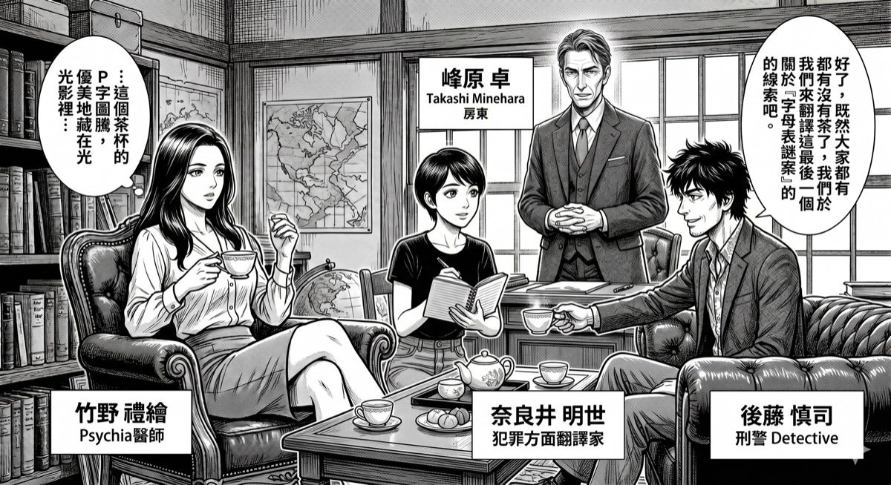

ALPHABET MYSTERY
字母表謎題
第一章：P 的 妄 想

🎧
收聽案件導覽音頻
由 NotebookLM 生成 · 點擊在新分頁開啟
開始調查
案件資料室
P 的 妄 想
讀取中...
嫌 疑 人
已知線索
進入線索調查室
指認兇手
可疑動機
不在場說詞
關閉
←
偵探助理
● 線上調查中
🔎 0 / 4
關鍵線索進度
被害人如何死亡？
案發當天各人在哪？
現場有什麼異常？
誰最有嫌疑？
地毯有什麼問題？
➤
指認兇手
選出你認為的兇手，並說明你的推理依據
🔎 線索調查中已發現的關鍵線索
你指認的兇手
推理需涵蓋以下 4 個關鍵點
提交推理
重新選擇
AI 正在評斷你的推理...
← 回到案件資料室
← 重新調查